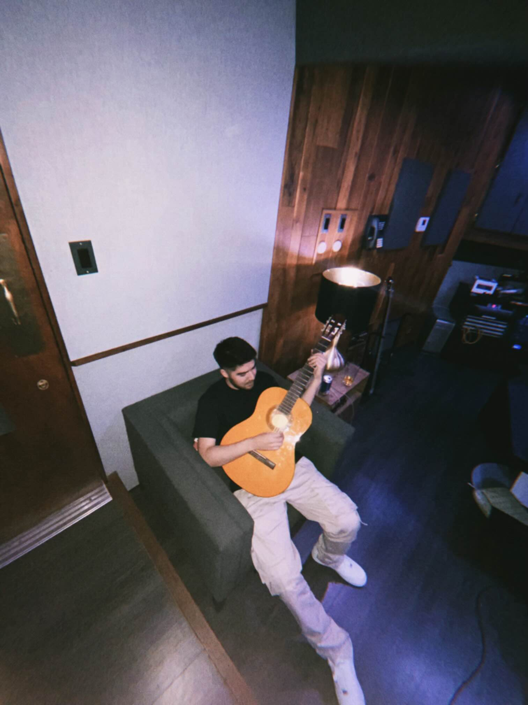

Return

Meet Alan Rodrigo, the 24-year-old music enthusiast who recently made the move to Los
Angeles and is making his mark in the music industry. Originally from [insert previous location if
known], Alan's journey to the heart of the entertainment capital of the world has been fueled by
his passion for creating captivating music.
highlight credits


Meet Alan Rodrigo, the 24-year-old music enthusiast who recently made the move to Los
Angeles and is making his mark in the music industry. Originally from [insert previous location if
known], Alan's journey to the heart of the entertainment capital of the world has been fueled by
his passion for creating captivating music.
Alan has gained recognition for his work with "d4vd," collaborating closely to craft tracks that are
set to feature on d4vd's highly anticipated album. His contributions showcase an ear for
production and a knack for enhancing the artist's unique style, earning him praise for his ability
to bring musical visions to life.
Alan has also left an impression on the latest album by Blxst titled "Thousand Hours," featuring
Joony. His involvement in the project underscores his versatility and ability to adapt his
production skills across different genres and artist collaborations.
highlight credits
> blxst & joony - “Thousand hours”
> bankrol hayden - “outcome” (soundcloud only)
> wynne - “hot friend”
> nvsh - “colder”
> Alan has unreleased cuts with tate mcrae, don toliver, polo g, and more!